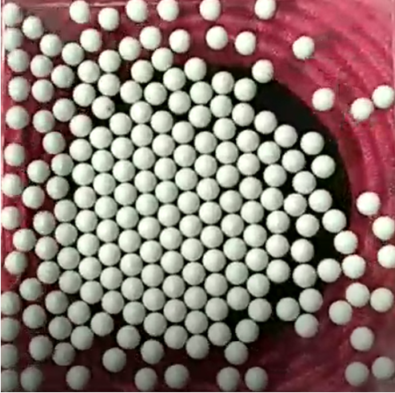
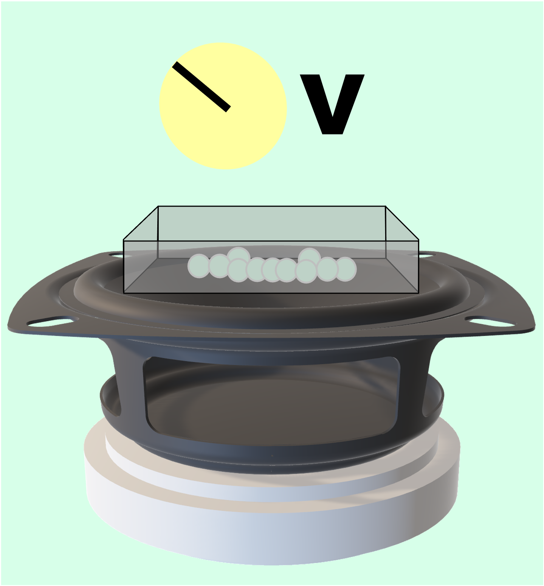

Flat Self Assembly

Inputs: .mp4 top-down video of spherical beads at different
Number of particles, N
Amplitude of the vibration, A
Outputs: The estimated entropy of the system
Data Acquisition

- Start the video record
- On an applied voltage (amplitude), put a set of 10 particles into the plate
- Wait for 30s for the system to equilibrate
- Repeat 2, 3 until 205 particles is in a plate
- Stop the video record
- Repeat the whole process with different amplitude
This setup allow minimal perturbance to the data acquisition which help the system equilibrate with a smaller amount of time.
Data Workflow